Member Photo Gallery
Celebrating OFUSCA members, families, women, elders, youth, and friends whose fellowship keeps Omukwu heritage alive in the United States and Canada.
Living community
Our people, our culture, our shared home.
This gallery can be expanded with official portraits, executive photos, branch photos, convention albums, scholarship award photos, and project site reports.
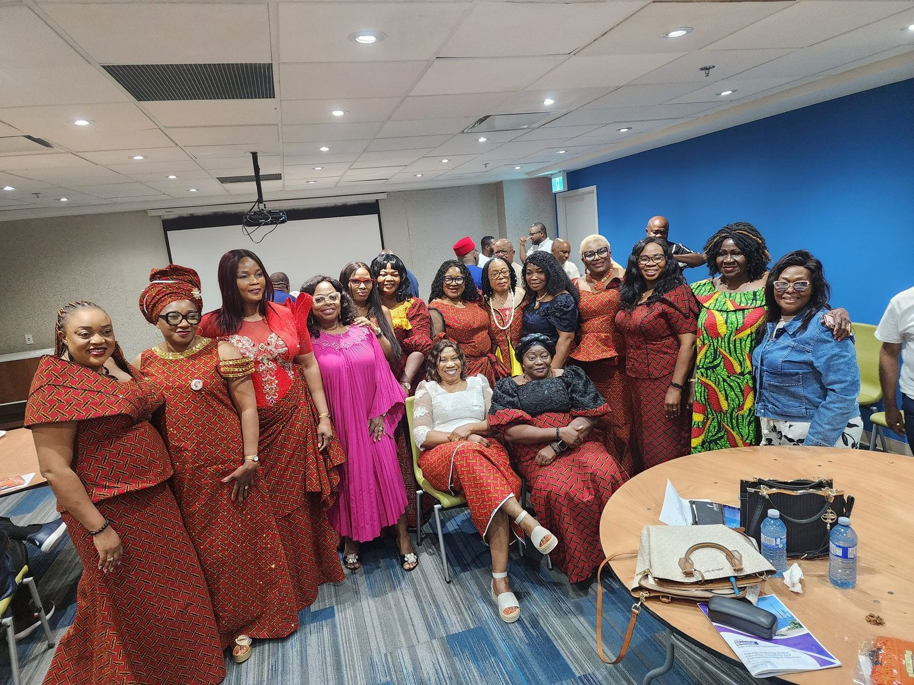


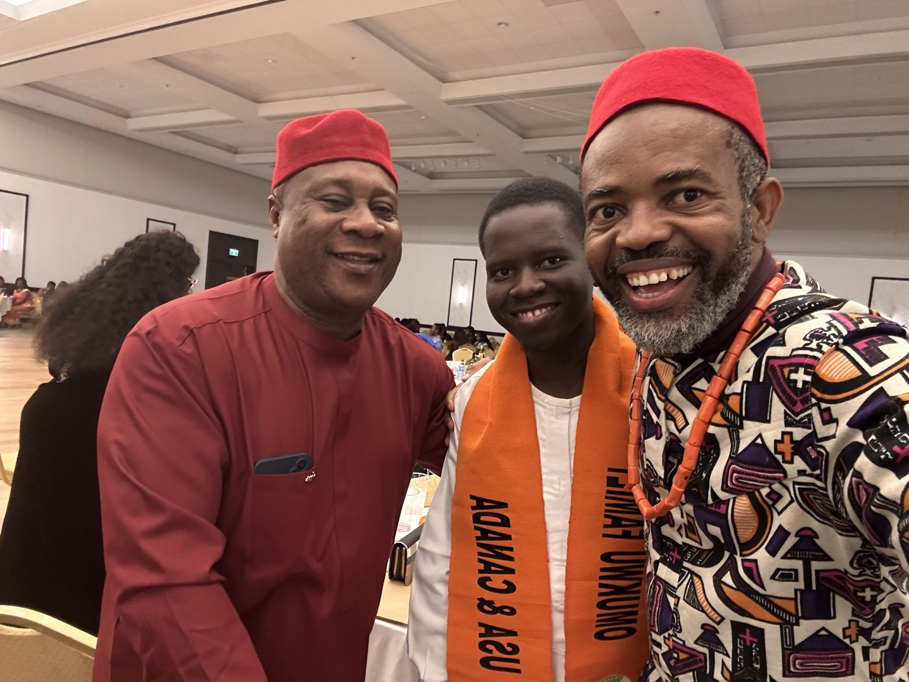


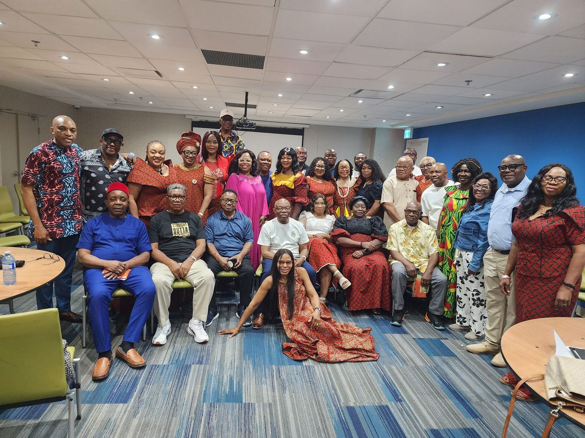
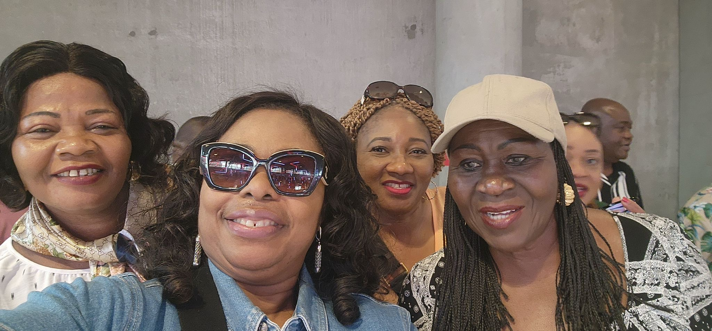
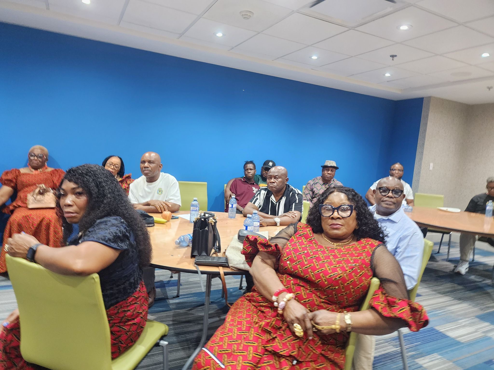
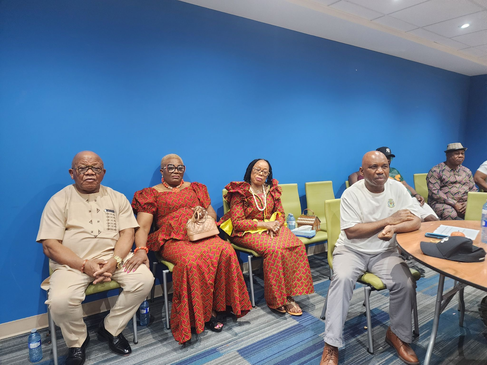
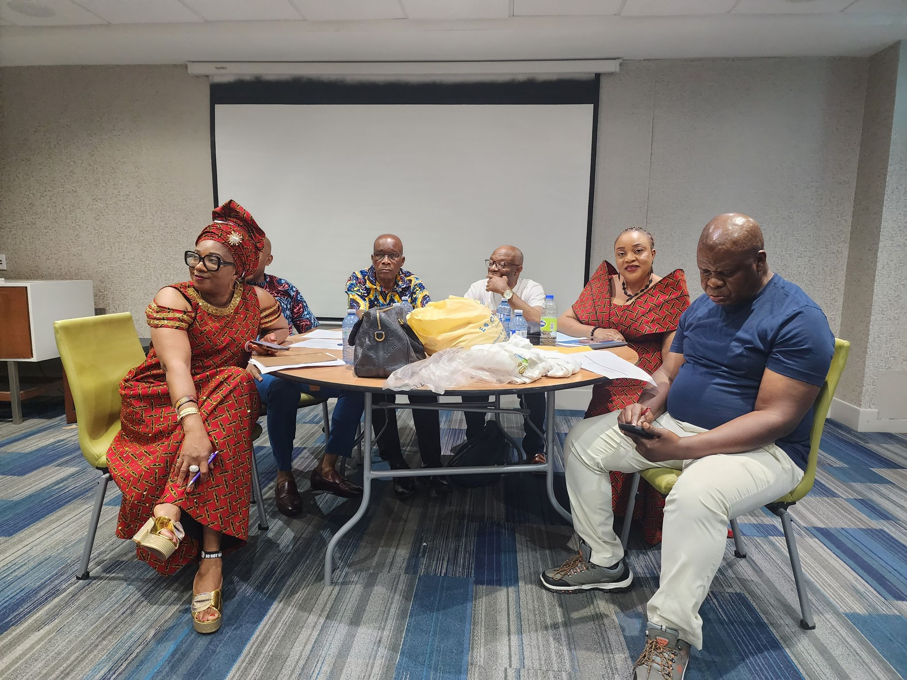
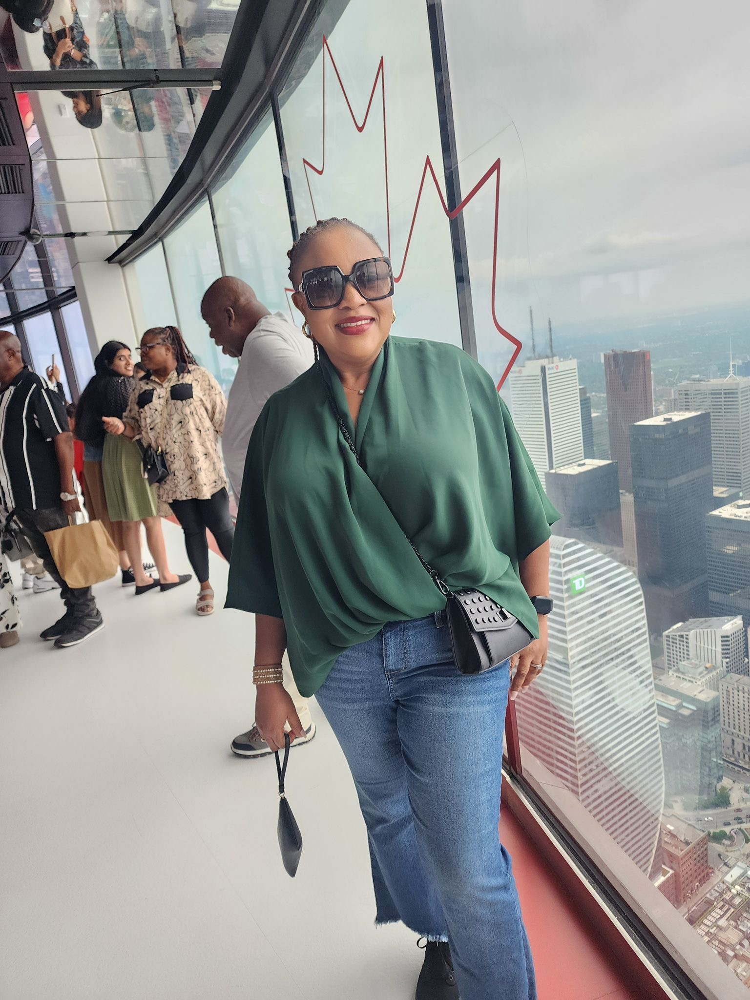
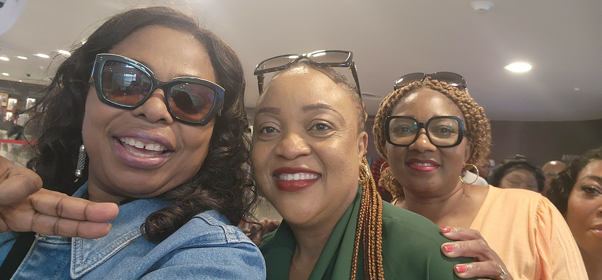
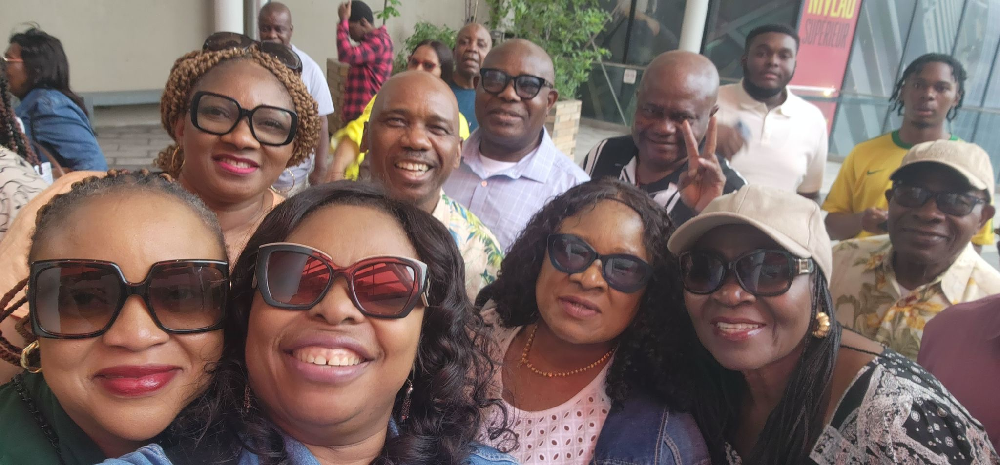
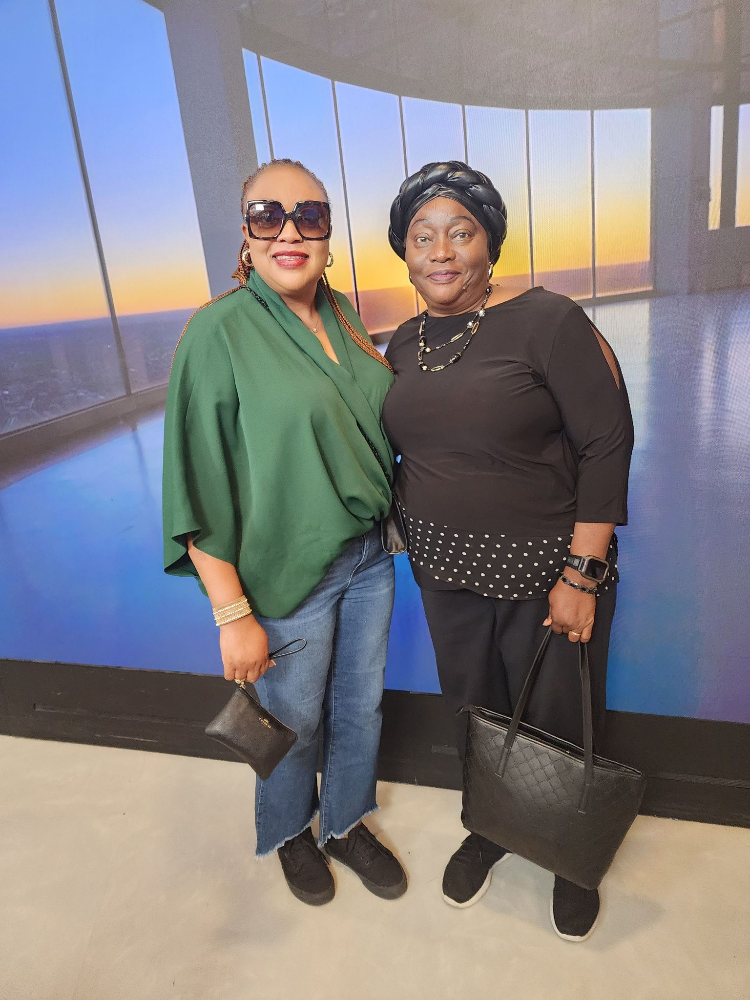
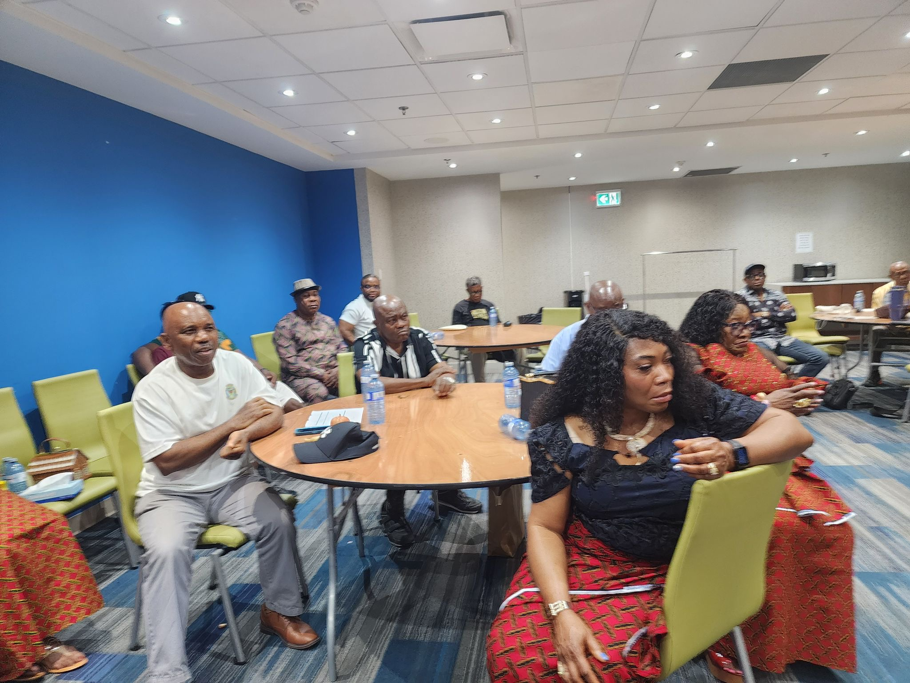
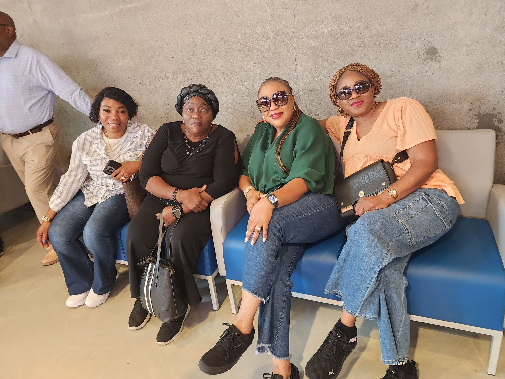